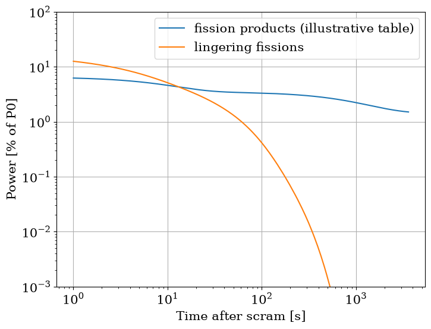

Add decay heat
Add point kinetics, feedback and a trip builds a kinetics node and leaves its power_input open. This page builds a decay-heat function in watts from a supplied fission-product table, plots it beside the lingering fissions over an hour, and wires it into a kinetics node that scrams at 10 s. The physics of every term is on Decay Heat.
[1]:
import matplotlib.pyplot as plt
import numpy as np
import pandas as pd
from matplotlib import rc
rc("font", family="serif", size=15)
from stream import Aggregator
from stream.calculations.point_kinetics import PointKineticsWInput, ReactivityController
from stream.composition import point_kinetics_steady_state
from stream.examples.lofa.params import BETA, GENERATION_TIME, LAMBDA
from stream.physical_models.decay_heat import fission_products, fissions
from stream.physical_models.decay_heat.fission_products import Source, Standard, fp_inner_
from stream.units import hour
from stream.utilities import identity
The fission products, from a supplied table
fission_products.contribution(standard, source) reads a standard’s table from a CSV file in the package’s standards directory, named after the pair (U235_ans14.csv for Source.U235 and Standard.ANS14), with a column alpha in MeV/s per fission and a column lamda in 1/s. Those files ship empty, so every pair raises FileNotFoundError. Without a table, call the sum itself: fp_inner_(t, T, lamda, alpha) takes the two columns as arrays and returns MeV per fission.
Its t is the time after shutdown and its T the operation time before it, both in seconds; T is never a temperature, although on the kinetics node the same letter carries the feedback temperatures.
MeV per fission becomes watts through the fission rate \(P_0 / Q\), with \(Q\) = 200 MeV recoverable per fission. Without it the function returns MeV per fission, which the node adds to watts without complaint. The table below is illustrative, not a standard.
[2]:
try:
fission_products.contribution(Standard.ANS14, Source.U235)
except FileNotFoundError as err:
print(f"contribution: {err}")
P0 = 1e6
Q = 200.0
T_OP = 30 * 24 * hour
LAMDA = np.array([1e-1, 1e-3, 1e-5])
ALPHA = np.array([0.6, 4e-3, 3e-5])
def dh(t):
return (P0 / Q * fp_inner_(t, T_OP, LAMDA, ALPHA)).item()
print(f"dh at shutdown: {dh(0.0) / 1e3:.1f} kW, {dh(0.0) / P0 * 100:.2f} % of P0")
contribution: Does not vendor U235 from ANS14
dh at shutdown: 65.0 kW, 6.50 % of P0
The table gives 6.5 % of the power at shutdown after thirty days of operation. .item() makes the one-element array a plain float. An activated structure takes the same route: activation.profile(lamda) is a shape, 1 at shutdown after long operation, and needs an energy per fission before the factor \(P_0 / Q\).
The lingering fissions
fissions.profile takes a time grid, the generation time, the delayed-neutron fractions and decay rates, and a controller; it solves a kinetics node once on that grid from a critical start, its clock the time after shutdown, and returns the power over its starting value: a shape, not watts. Here the rods are 5 dollars driven in over 0.5 s. The profile interpolates its grid, holds the last value past its end, and ignores its T. fissions.profile_from_pk(time, pk) reads the same
constants off a node and hands the profile’s solve the node’s own controller object, so its scram time and state machine act in that solve before the node’s own run; pass fissions.profile a controller of its own instead.
[3]:
DOLLAR = float(np.sum(BETA))
def rods(t):
return -5.0 * DOLLAR * min(max(t, 0.0) / 0.5, 1.0)
grid = np.concatenate([[0.0], np.geomspace(1e-3, hour, 400)])
shape = fissions.profile(grid, GENERATION_TIME, BETA, LAMBDA,
controls=ReactivityController(input_reactivity=lambda state, t_state, t: rods(t)))
t = np.geomspace(1.0, hour, 300)
fp_pct = np.array([dh(s) for s in t]) / P0 * 100
fis_pct = (P0 - dh(0.0)) * shape(t) / P0 * 100
marks = [1.0, 60.0, 600.0, hour]
print(pd.DataFrame({"fission products [% of P0]": [dh(s) / P0 * 100 for s in marks],
"lingering fissions [% of P0]": [(P0 - dh(0.0)) * shape(s) / P0 * 100 for s in marks]},
index=pd.Index(marks, name="time after scram [s]")).round(4))
fig, ax = plt.subplots(figsize=(8, 6))
ax.loglog(t, fp_pct, label="fission products (illustrative table)")
ax.loglog(t[fis_pct > 0], fis_pct[fis_pct > 0], label="lingering fissions")
ax.set_xlabel("Time after scram [s]")
ax.set_ylabel("Power [% of P0]")
ax.set_ylim(1e-3, 100)
ax.grid()
ax.legend()
plt.show()
fission products [% of P0] lingering fissions [% of P0]
time after scram [s]
1.0 6.2125 12.5543
60.0 3.3901 1.0207
600.0 2.5887 0.0004
3600.0 1.5016 0.0000

The lingering fissions make about 12.6 % against the fission products’ 6.2 % at 1 s, about 1.0 % against 3.4 % at a minute, and under 0.001 % at ten minutes; the fission products still make about 1.5 % at an hour. The profile sets values below 1e-12 of its start to zero, hence the 0.0000 and the plot’s filter on positive points.
A kinetics node already integrates the chain reaction, so power_input takes the fission products alone and the lingering fissions come from the node’s own rows. A fuel with no kinetics node takes the sum of both curves as its power schedule.
Wire it into the kinetics node
Feedback and outside power sets out the row that adds power_input to the fission power and the seed on the difference. The decay-heat function counts from the scram, so it is bound as lambda t: dh(max(t - T_TRIP, 0.0)): constant before the trip, which lets the seed be a root, and decaying after it. A function bound at bare t starts decaying before the reactor shuts down. For a trip a run detects, as on the previous
page, T_TRIP is ctrl.log[-1][1] after the stop.
[4]:
T_TRIP = 10.0
ctrl = ReactivityController(input_reactivity=lambda state, t_state, t: rods(t - T_TRIP))
pk = PointKineticsWInput(GENERATION_TIME, BETA, LAMBDA, controls=ctrl)
agr = Aggregator.from_decoupled(pk, funcs={pk: {"t": identity, "power_input": lambda t: dh(max(t - T_TRIP, 0.0))}})
y0 = agr.load(point_kinetics_steady_state(pk, P0, power_input=dh(0.0)))
sol = agr.solve(y0, np.linspace(0.0, 60.0, 121))
power = agr.at_times(sol, pk, "power")
pk_power = agr.at_times(sol, pk, "pk_power")
print(f"seed residual: {np.linalg.norm(agr.compute(y0, 0.0)):.1e}")
print(f"power at 60 s: {power[-1] / 1e3:.2f} kW")
print(f"power - pk_power: {(power[-1] - pk_power[-1]) / 1e3:.4f} kW")
print(f"dh 50 s after the trip: {dh(50.0) / 1e3:.4f} kW")
print(f"pk_power over its seed: {pk_power[-1] / pk_power[0]:.6f}")
print(f"profile at 50 s: {shape(50.0):.6f}")
seed residual: 4.3e-09
power at 60 s: 47.31 kW
power - pk_power: 34.2192 kW
dh 50 s after the trip: 34.2192 kW
pk_power over its seed: 0.014002
profile at 50 s: 0.014002
The seed is a root to about 4e-9. At 60 s the core makes about 47 kW, of which about 34 kW is the decay heat the function returns 50 s after the trip, and the fission rows have fallen to the profile’s value at 50 s to every printed digit: the node computes the lingering fissions itself.
Attaching the kinetics wires decay heat the same way on the pool reactor, a power-law fit counted from the low-flow trip, and Power and reactivity in Both Pumps Trip shows the power settling onto it. Get a steady solve to converge is the next task.